Seguridad activa
Active safety → I'll translate preserving all formatting.
Seguridad activa
Advertencia de colisión frontal (FCW y AEB)
advertencia
Introducción
La advertencia de colisión frontal no funciona cuando el vehículo está en marcha atrás.
Cuando el sistema detecta un riesgo de colisión, emitirá alertas a través de la interfaz SR y un sonido de aviso.
• Para peatones y vehículos de dos ruedas, la FCW funciona a velocidades de aproximadamente 10 a 85 km/h.
advertencia
• Para vehículos, la FCW funciona a velocidades de aproximadamente 10 a 150 km/h.
• Cuando el vehículo emite una advertencia, el conductor debe tomar medidas de inmediato y no esperar a que intervenga el AEB.
La advertencia de colisión frontal incluye la advertencia de colisión frontal (FCW) y la frenada de emergencia automática (AEB), que pueden reducir el riesgo de colisiones del vehículo o reducir la velocidad antes de una colisión, mejorando así la seguridad en la conducción.
Si el riesgo aumenta aún más, y el conductor sigue sin frenar o la fuerza de frenado es demasiado pequeña, el vehículo frenará de forma activa para reducir las colisiones y las lesiones.
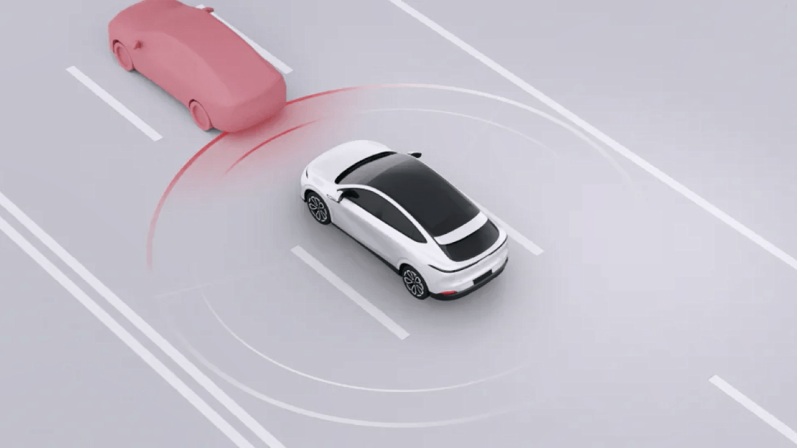
Seguridad activa
advertencia
y el conductor es totalmente responsable de la seguridad en la conducción. Observe siempre las condiciones de la carretera mientras conduce y no confíe en las advertencias de colisión frontal para advertir o evitar posibles colisiones. Varios factores pueden degradar o afectar el rendimiento, lo que da lugar a advertencias innecesarias, inexactas o ineficaces, intervenciones de frenado o advertencias omitidas. La confianza en la advertencia de colisión frontal para advertir de posibles colisiones y evitar posibles lesiones graves o la muerte.
• Para peatones y vehículos de dos ruedas, el AEB funciona a velocidades de aproximadamente 8 a 85 km/h.
• Para vehículos en movimiento, detenidos o que se mueven lentamente, el AEB funciona entre aproximadamente 4 y 150 km/h del vehículo.
• Si el AEB frena el vehículo, este permanecerá detenido durante un breve periodo de tiempo y el conductor debe tomar el control lo antes posible.
• La frenada de emergencia autónoma no está diseñada para evitar colisiones. Solo puede minimizar el impacto de un choque frontal intentando reducir al máximo la velocidad en carretera. Confiar en la frenada de emergencia autónoma para evitar colisiones puede provocar lesiones graves o la muerte.
• La aplicación del pedal del acelerador por parte del conductor durante la intervención del AEB en el frenado del vehículo puede provocar una interrupción del frenado.
• La advertencia de colisión frontal es una ayuda que no funciona en todas las condiciones de conducción, tráfico, clima y carretera. No hay sustituto para una conducción concentrada y un juicio preciso,
advertencia
Indicadores en el cuadro de instrumentos
Advertencia de colisión frontal DESACTIVADA

Seguridad activa
Inicialización de la advertencia de colisión frontal
“Advertencia de colisión frontal”. Una vez habilitada esta función, puede ajustar la sensibilidad de la advertencia de colisión frontal.
Fallo de la advertencia de colisión frontal
La advertencia de colisión frontal se activa automáticamente cada vez que conduce, y se recomienda mantenerla siempre activada para su seguridad.
Consejos
Funcionamiento
Activación y desactivación
Before using FCW, the driver should refer to this... — aquí está la traducción:
Antes de usar el FCW, el conductor debe consultar este capítulo para obtener orientación y conocer las restricciones sobre el uso de las funciones correspondientes.
Advertencias, precauciones y limitaciones
advertencia
No confíe únicamente en la función de advertencia de colisión frontal en los siguientes escenarios, en los que puede verse limitada o quedar inoperativa:
En la CID, vaya a la interfaz " →Asistencia a la conducción→Seguridad activa", donde podrá activar o desactivar
• Radar o cámara restringidos.
• Oscuridad o mala visibilidad. Por ejemplo, malas condiciones de iluminación, lluvia intensa, nieve intensa, niebla densa, etc.

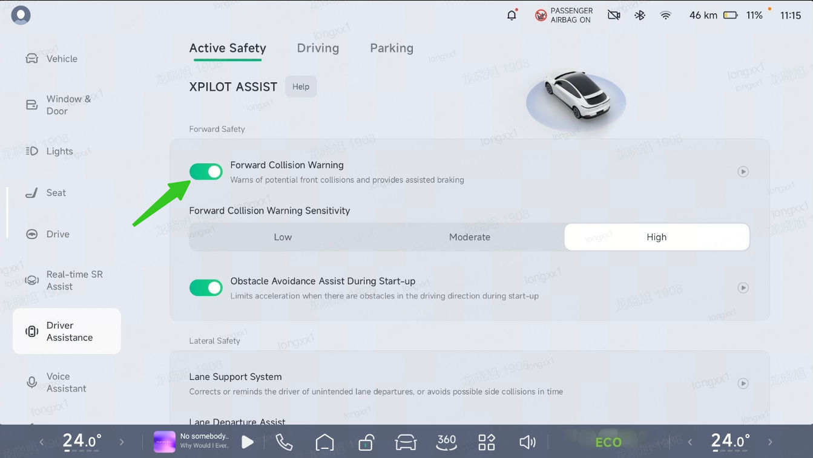
Seguridad activa
• Cuando una luz intensa obstruye la visión de la cámara. Por ejemplo, la luz de los faros de un vehículo que viene de frente o la luz solar directa.
• Al pasar junto a un objeto estacionario al costado de la carretera o al adelantar al cambiar de carril.
• El parabrisas bloquea el campo de visión de la cámara (vaho, suciedad, calcomanías, etc.).
• Los vehículos de adelante cambian de carril después de frenar.
• Vehículos retrocediendo más adelante.
• El vehículo atraviesa una banda reductora de velocidad, una fuga en el suelo o una reja de hierro en el garaje.
• El vehículo circula por curvas amplias o en malas condiciones de la carretera.
• Cuando el vehículo pasa por viaductos, pasarelas peatonales o debajo de carteles.
• El objetivo aparece de repente. Por ejemplo, cuando hay un movimiento rápido y repentino de otro vehículo o un movimiento cercano hacia la parte delantera del vehículo.
• Cuando el vehículo atraviesa juntas de viaductos, barreras metálicas al costado de la carretera, etc.
• Semáforos más adelante, agua de un aspersor, salpicaduras de agua, postes de hierro en la carretera, tubos de acero en el aire, bolsas de plástico flotando, latas rodando en la carretera, estacionamientos subterráneos, peajes de autopista, tapas de alcantarilla, etc.
• Superposición insuficiente del objetivo (coincidencia del ancho delantero y trasero del vehículo de adelante).
• El conductor frena, pisa a fondo el acelerador o realiza maniobras rápidas o amplias con el volante.
• Hay un vehículo estacionario en la entrada y salida de la curva.
Las advertencias, precauciones y limitaciones anteriores no cubren todas las condiciones que pueden afectar el funcionamiento normal del FCW y AEB.
• Al conducir en una curva, el vehículo que se aproxima reduce la velocidad de repente.
• Un vehículo que adelanta desde el frente en una curva.
Seguridad activa
Detección de punto ciego (BSD)
Introducción
Cuando el vehículo está en posición D y la velocidad actual del vehículo es superior a 10 km/h, si hay un vehículo en el punto ciego o un vehículo que se aproxima rápidamente por detrás del punto ciego, la luz de advertencia del espejo lateral correspondiente permanecerá encendida de forma fija. En ese momento, si se activan las luces de giro del lado correspondiente, la luz de advertencia del espejo lateral parpadeará para dar una advertencia.
La asistencia de seguridad de punto ciego incluye la detección de punto ciego (BSD) y la alerta de cambio de carril (LCA), que pueden monitorear los carriles a ambos lados del vehículo y dar una advertencia cuando existe riesgo al cambiar de carril.
advertencia
La asistencia de seguridad de punto ciego es una ayuda a la conducción y no puede hacer frente a todas las condiciones de tráfico, climáticas y
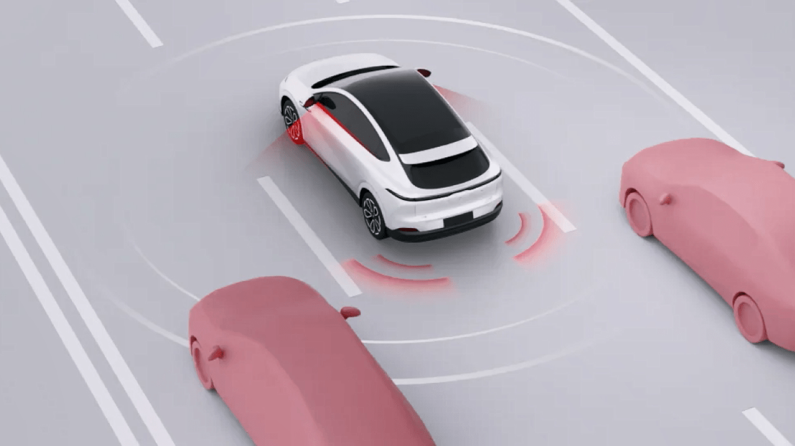
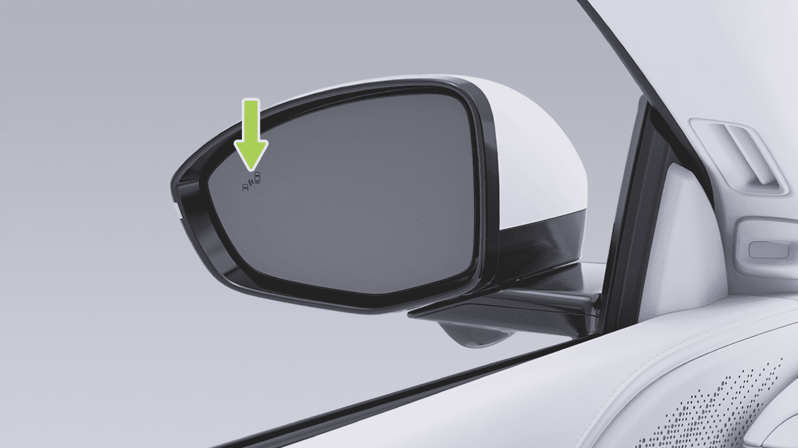
Seguridad activa
condiciones, y no sustituye la concentración del conductor ni un juicio acertado. Tampoco está destinada a reemplazar el uso de los espejos interiores y exteriores. Usted, como conductor del vehículo, es responsable de conducir de forma segura, y siempre es responsabilidad del conductor cambiar de carril de manera segura. No confíe en esta función para controlar el vehículo, ya que podría provocar lesiones o la muerte.
En el CID, vaya a la interfaz " →Asistencia al Conductor→Seguridad Activa", donde puede activar o desactivar la "Detección de Punto Ciego".
Advertencias, precauciones y limitaciones
La asistencia de seguridad en el área de punto ciego puede no funcionar en los siguientes escenarios:
advertencia
• Radar limitado
Apertura y cierre
Funcionamiento
• Curvas cerradas.
• Al dar marcha atrás.
• Hay objetos metálicos grandes en movimiento en el área de punto ciego.
Las advertencias, precauciones y limitaciones anteriores no cubren todas las condiciones que pueden afectar el funcionamiento normal de la función de Detección de Punto Ciego.

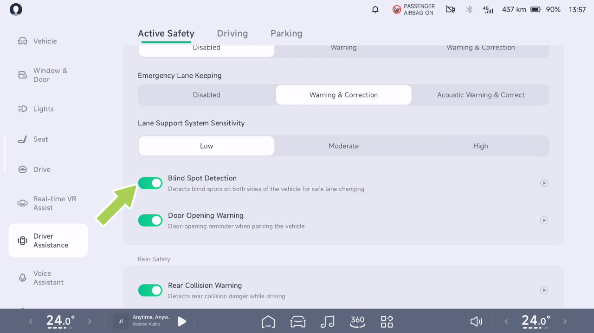
Seguridad activa
Advertencia de Apertura de Puertas (DOW)
Introducción
Si el conductor o el pasajero continúa abriendo la puerta del lado correspondiente, se activa una alarma de Nivel II, acompañada de la interfaz SR, un sonido de advertencia y el parpadeo de las luces ambientales de la puerta como recordatorio.
Cuando existe riesgo de colisión al abrir la puerta, la DOW puede advertir al conductor y a los pasajeros.
Cuando la velocidad del vehículo está entre 0 y 5 km/h y vehículos, peatones o vehículos de dos ruedas se aproximan dentro del rango de detección, la DOW activa una advertencia de nivel I, indicada por la iluminación constante de la luz de advertencia en el espejo lateral correspondiente.

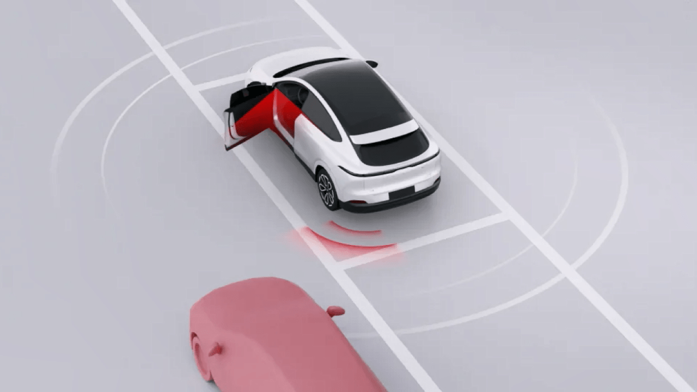
Seguridad activa
en esta función para controlar el vehículo, ya que podría provocar lesiones o la muerte.
Funcionamiento
Apertura y cierre
• La luz ambiental de la puerta parpadea.
advertencia
La DOW es únicamente una función de asistencia a la conducción diseñada para alertar a los ocupantes sobre la seguridad de la puerta al abrirla y no puede gestionar todas las condiciones de tráfico, clima y carretera. No está destinada a reemplazar la observación visual del conductor y los pasajeros, ni la función de los espejos interiores y exteriores. Usted, como conductor del vehículo, es responsable de la seguridad en la conducción y no debe confiar
En el CID, vaya a la interfaz " →Asistencia al Conductor→Seguridad Activa", donde puede activar o desactivar la "Advertencia de Apertura de Puertas".

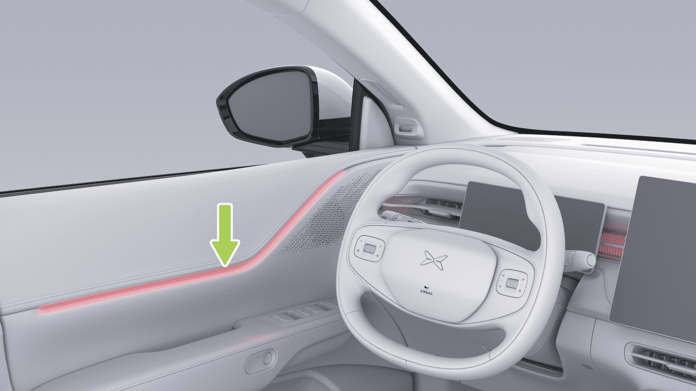
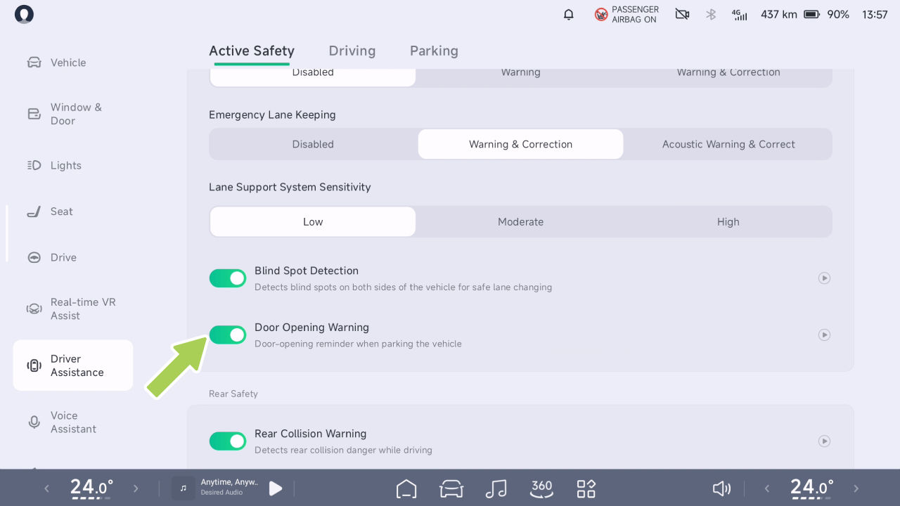
Seguridad activa
Advertencias, precauciones y limitaciones
Advertencia de Colisión Trasera (RCW)
La DOW puede no funcionar en los siguientes escenarios:
advertencia
Introducción
• Radar limitado
• Objetivos más pequeños u objetivos estacionarios.
• Velocidad del objetivo demasiado alta o comportamiento de la dirección. Por ejemplo: El vehículo objetivo cambia de carril justo detrás del vehículo propio, y otros vehículos cambian de carril repentinamente justo detrás del vehículo propio y ahora se encuentran en la zona de monitoreo.
• Otros vehículos, ciclistas que aparecen justo detrás del vehículo.
• El vehículo está estacionado en una esquina o cerca de una pared.
Durante la conducción, el RCW puede detectar y advertir el riesgo de colisión detrás del vehículo.
Cuando la velocidad actual del vehículo es de 15~160 km/h, hay vehículos, peatones y bicicletas que se aproximan a cierta velocidad dentro del rango de detección, y existe riesgo de colisión, el RCW emitirá una advertencia a través de la interfaz SR y un sonido de aviso, y le recordará a los
Las advertencias, precauciones y limitaciones anteriores no cubren todas las condiciones que puedan afectar el funcionamiento normal del DOW.
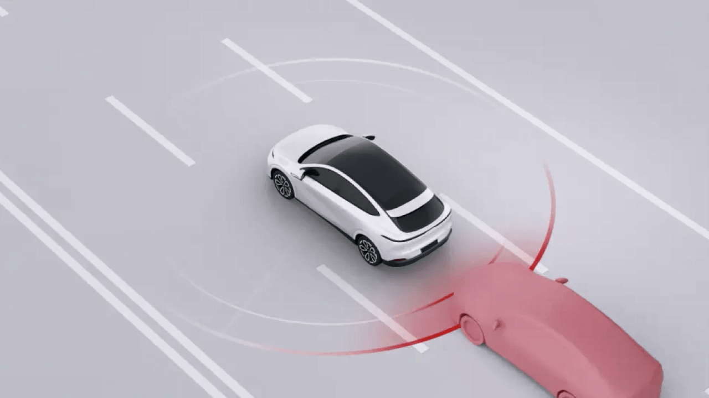
Seguridad activa
vehículos que circulan detrás encendiendo las luces de advertencia de emergencia.
Operación
advertencia
Activación y desactivación
El RCW es una ayuda a la conducción y no puede manejar todas las condiciones de tráfico, clima y carretera, y no sustituye la concentración del conductor ni un juicio preciso. Tampoco pretende reemplazar el uso de los espejos interiores y exteriores. Usted, como conductor del vehículo, es responsable de la seguridad en la conducción y no debe confiar en esta función para controlar el vehículo, ya que podría provocar lesiones o la muerte.
En la pantalla de control central, vaya a la interfaz " →Asistencia a la conducción→Seguridad activa", y podrá activar o desactivar la "Advertencia de colisión trasera".
Advertencias, precauciones y limitaciones
En los siguientes escenarios, el RCW puede no funcionar correctamente:
advertencia
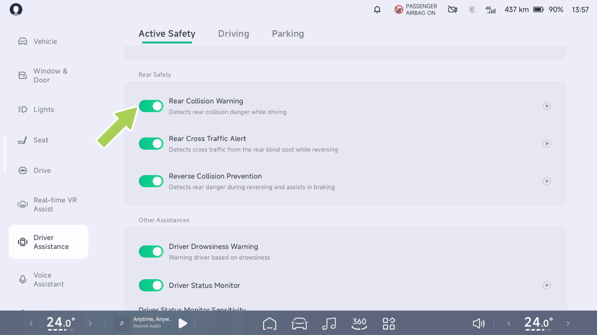
Seguridad activa
• Radar limitado
• La velocidad de detección del objeto es demasiado alta.
Prevención de colisión en marcha atrás RAEB
• Hay objetos metálicos grandes en movimiento en la zona ciega.
Introducción
• Curvas cerradas.
Las advertencias, precauciones y limitaciones anteriores no cubren todas las condiciones que puedan afectar el funcionamiento normal del RCW.
El sistema de prevención de colisión en marcha atrás detecta los riesgos de colisión detrás del vehículo mientras se da marcha atrás y proporciona alertas, junto con asistencia de frenado.
Cuando el vehículo está en marcha atrás (R) y circula a velocidades de 0 a 18 km/h, y peatones que se aproximan a cierta velocidad dentro del rango de detección representan un riesgo de colisión, el RAEB avisará a través de la interfaz SR y un sonido de aviso.
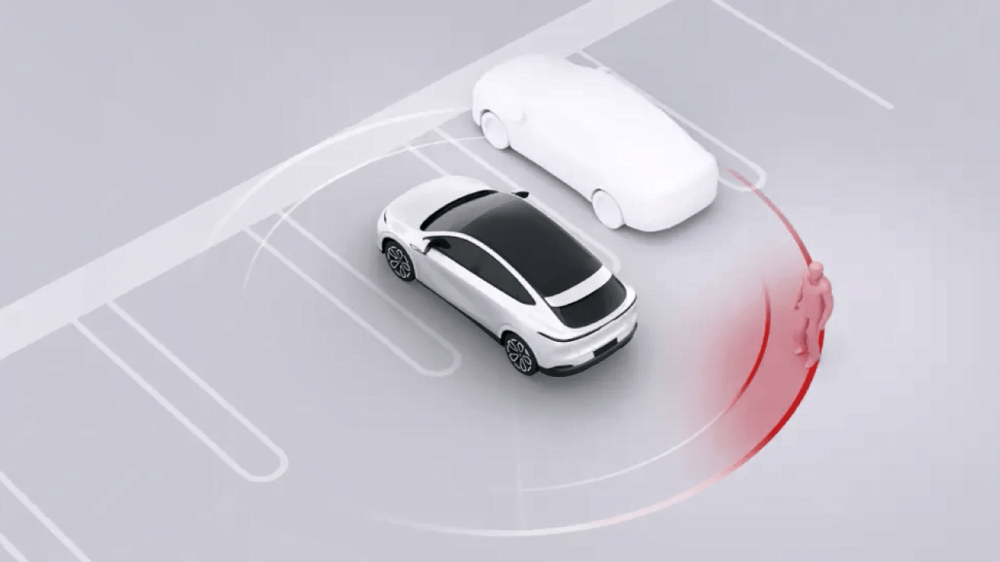
Seguridad activa
Si el riesgo continúa aumentando y el conductor no frena o aplica una fuerza de frenado insuficiente, el sistema RAEB activará la asistencia de frenado para mitigar o evitar lesiones relacionadas con la colisión.
Operación
advertencia
La función RAEB es una ayuda a la conducción y puede no funcionar en todas las situaciones, ni sustituye la atención del conductor, quien debe dar marcha atrás de forma segura. No utilice el sistema cuando la visibilidad esté obstruida y las condiciones del tránsito sean difíciles de observar, como en una vía con mucho tránsito o al cruzar varios carriles, ya que el sistema puede no identificar con precisión a ciclistas y peatones. Por eso, siempre debe estar atento a su entorno.
En el CID, vaya a la interfaz “ →Asistencia a la Conducción→Seguridad Activa” y podrá activar o desactivar “Prevención de Colisión en Marcha Atrás”.
precaución
Advertencias, precauciones y limitaciones
Una vez que el RAEB aplica el freno de estacionamiento, los frenos se mantienen durante un período de tiempo y el conductor debe tomar el control del vehículo lo antes posible.
El RAEB puede no funcionar correctamente en todos los casos y puede generar advertencias innecesarias, inoportunas o ineficaces por diversos motivos. O bien omitir advertencias, como por ejemplo:
advertencia

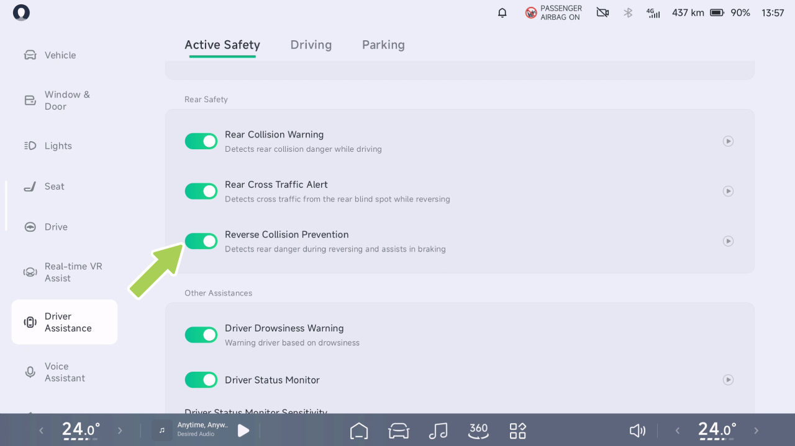
Seguridad activa
• Radar limitado
• Objetos metálicos grandes en movimiento en la zona del punto ciego.
Cuando la visibilidad en marcha atrás es limitada, el RCTA puede avisar al conductor sobre los vehículos que se aproximan en los puntos ciegos a ambos lados por detrás.
Las advertencias, precauciones y limitaciones anteriores no abarcan todas las condiciones que pueden afectar el funcionamiento normal del RAEB.
• El objeto que debe detectarse se mueve demasiado rápido.
Cuando el vehículo está en marcha R o N, desplazándose en reversa a una velocidad de 2~15 km/h, y se detecta un vehículo, peatón o vehículo de dos ruedas que se aproxima a cierta velocidad dentro del rango de detección y que representa un riesgo de colisión, se activa el RCTA y se proporcionan alertas a través de la interfaz SR y un sonido de aviso.
Alerta de Tránsito Cruzado Trasero (RCTA)
Introducción
advertencia
El RCTA es solo una ayuda a la conducción y no puede hacer frente a todas las condiciones de tránsito, clima y vía, y no sustituye la atención ni el criterio preciso del conductor. Tampoco pretende reemplazar el uso de los espejos interiores y exteriores. No se arriesgue a conducir solo porque el sistema mejora el confort; dar marcha atrás de forma segura es siempre responsabilidad del conductor, y no confíe en esta función para controlar el vehículo, ya que podrían producirse lesiones o la muerte.
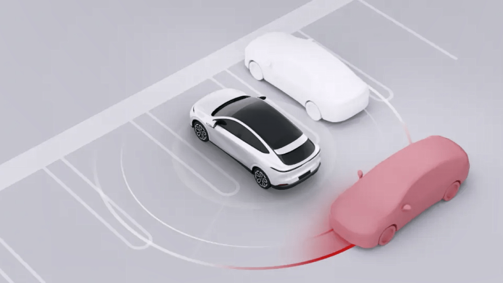
Seguridad activa
Funcionamiento
• Las condiciones del tránsito son complejas, como vías con mucho tránsito o al cruzar varios carriles.
Activación y desactivación
advertencia
El RCTA puede no funcionar en los siguientes casos:
• Radar limitado
• La velocidad de detección del objeto es demasiado rápida.
• Hay objetos metálicos grandes en movimiento en la zona ciega.
advertencia
El RCTA puede presentar las siguientes condiciones:
En la pantalla de control central, vaya a la interfaz “ →Asistencia a la Conducción→Seguridad Activa” y podrá activar o desactivar “Alerta de Tránsito Cruzado Trasero”.
• Los transeúntes y los vehículos de dos ruedas no se identifican con precisión.
Las advertencias, precauciones y limitaciones anteriores no abarcan todas las condiciones que pueden afectar el funcionamiento normal del RCTA.
Advertencias, precauciones y limitaciones
No utilice el RCTA en los siguientes casos:
advertencia
• Campo de visión limitado.

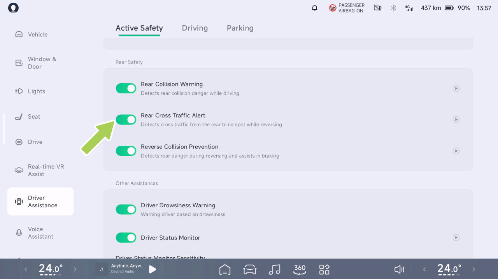
Seguridad activa
Asistente de seguridad al arrancar
advertencia
Introducción
El Asistente de Prevención de Arranque es únicamente una función de ayuda a la conducción y no sustituye la observación visual directa; no confíe demasiado en el Asistente de Arranque. Cuando la función está activada, la aceleración del vehículo se limita solo hasta cierto punto y usted aún debe controlar activamente el vehículo para detenerlo, de lo contrario igualmente se producirá una colisión. Es su responsabilidad permanecer atento, estar consciente del entorno de arranque del vehículo y prestar atención en todo momento a otros usuarios de la vía, ya que podrían producirse lesiones graves o la muerte.
Prevención de obstáculos al arrancar: cuando el vehículo arranca, si se detecta un obstáculo en la dirección de marcha y el conductor pisa el pedal del acelerador demasiado rápido, la respuesta dinámica del vehículo se limitará para evitar un choque con el obstáculo debido a una aceleración demasiado rápida del vehículo eléctrico.
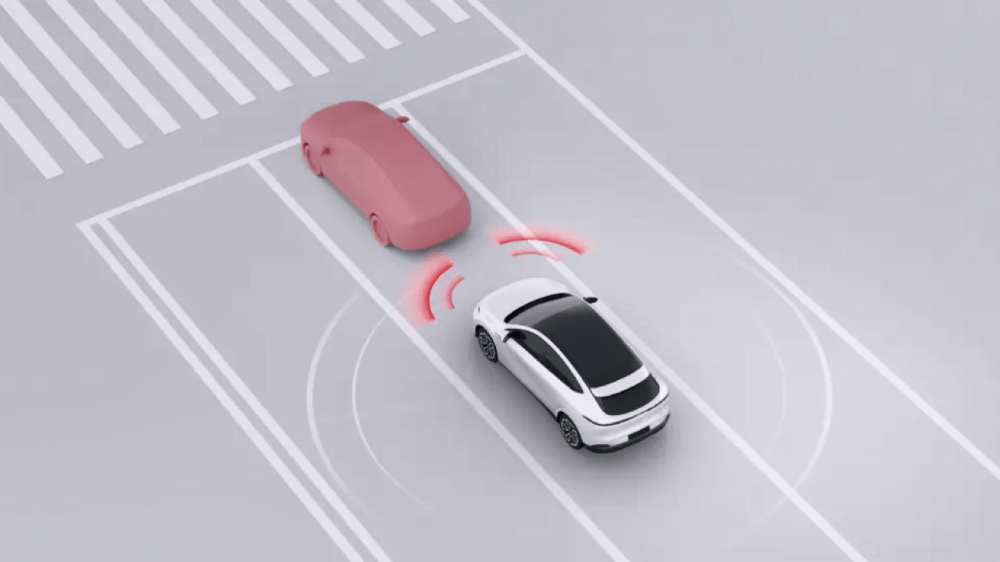
Seguridad activa
Funcionamiento
Advertencias, precauciones y limitaciones
Apertura y cierre
El Asistente de Prevención de Arranque no funciona siempre en todas las situaciones y puede provocar advertencias innecesarias, inexactas o ineficaces, u omisiones, por diversas razones, tales como:
advertencia
• Radar limitado
• Hay grandes objetos metálicos en movimiento en la zona ciega.
• La velocidad de detección del objeto es demasiado alta.
En la pantalla de control central, vaya a la interfaz “ →Asistencia a la conducción→Seguridad activa” y podrá activar o desactivar “Asistente de prevención de obstáculos durante el arranque”.
Las advertencias, precauciones y limitaciones anteriores no cubren todas las condiciones que pueden afectar el funcionamiento normal del asistente de prevención de obstáculos al arrancar.

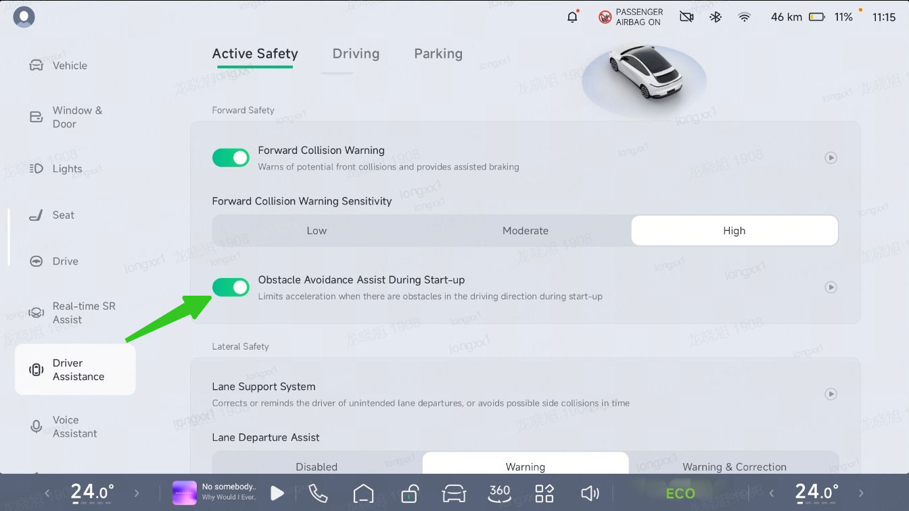
Seguridad activa
Asistente de mantenimiento de carril LSS
no puede reemplazar la conducción dedicada y el juicio preciso del conductor. Usted, como conductor del vehículo, es responsable de la seguridad en la conducción y no debe confiar en esta función para controlar el vehículo, ya que podrían producirse lesiones o la muerte.
Introducción
Si se selecciona el modo de advertencia temprana, solo se activará el LDW; si se selecciona el modo de corrección, se activarán todos: LDW, LDA y ELK:
• LDW: cuando la velocidad actual del vehículo es de 60~150 km/h y el vehículo se desvía del carril sin las correspondientes luces de giro activadas, la función emitirá una advertencia a través de la interfaz SR, un sonido de aviso y vibración del volante hasta que el conductor corrija la posición del vehículo.
El LSS incluye la advertencia de cambio de carril (LDW), el asistente de mantenimiento de carril (LDA) y el asistente de emergencia de mantenimiento de carril (ELK), que pueden advertir y corregir una salida de carril inconsciente o un posible choque lateral en caso de maniobra de emergencia.
advertencia
El LDW solo alerta y no corrige el vehículo de vuelta al carril; corrija la posición del vehículo a tiempo ante la alarma del LDW.
El LSS es una ayuda a la conducción y no puede hacer frente a todas las condiciones de tráfico, climáticas y de la vía, y
• LDA: Cuando la función LDA está activada y la velocidad actual del vehículo es de 60~150 km/h y
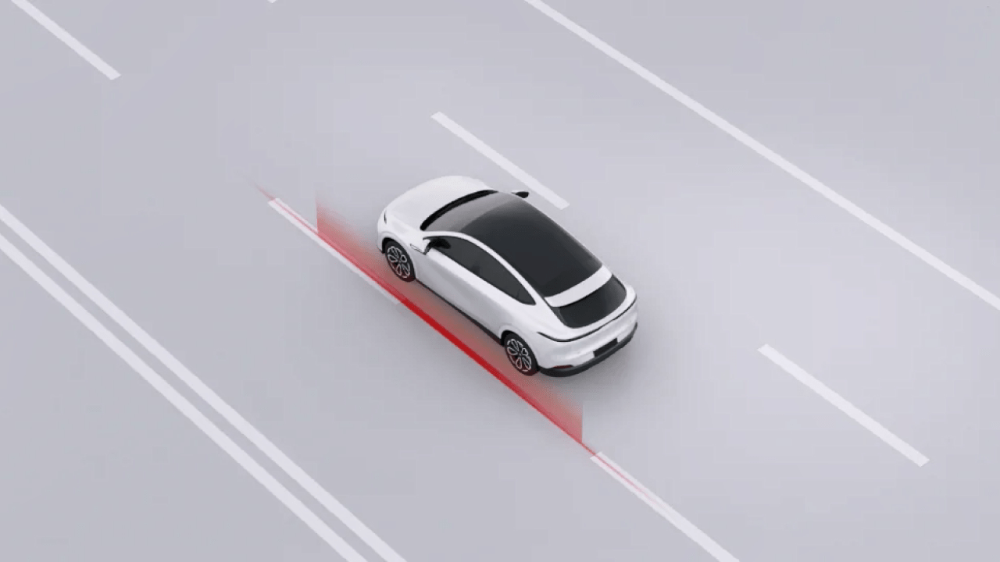
Seguridad activa
el vehículo se desvía del carril sin las señales de giro correspondientes encendidas, el LDA emitirá una advertencia a través de la interfaz SR y un sonido de aviso, e intervendrá en el control del volante para corregir y devolver el vehículo al carril.
• Tanto los limpiaparabrisas como las luces intermitentes dobles inhiben la activación de la función.
Operación
Configurar LSS
• ELK: Cuando la función ELK está activada y la velocidad actual del vehículo es de 60~150 km/h y el vehículo está a punto de chocar contra el bordillo, vehículos que vienen de frente o vehículos que adelantan, el ELK emitirá una advertencia a través de la interfaz SR y un sonido de aviso, e intervendrá en el control del volante para una evasión de emergencia.
precaución
• Cuando las señales de giro están encendidas o el conductor tiene una intención clara de girar (por ejemplo, girar el volante rápidamente, frenar, acelerar con el pedal del acelerador a fondo, encender las luces de emergencia, etc.), la Asistencia de Salida de Carril no alertará ni intervendrá en la salida del carril.
En la pantalla de control central, vaya a la interfaz “ →Asistencia al Conductor→Seguridad Activa”, y podrá configurar el modo de asistencia y las condiciones de activación de la Asistencia de Salida de Carril (LDA).

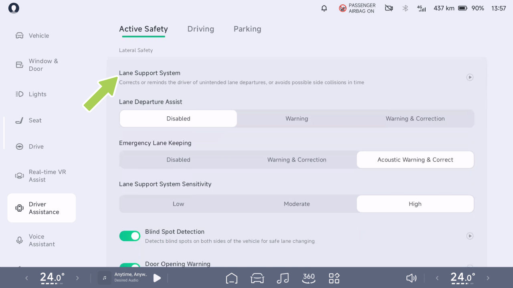
Seguridad activa
Si la Asistencia de Salida de Carril está configurada en Advertencia, solo se activará el LDW; si está configurada en Advertencia y Corrección, se activará el LDA.
• Oscuridad (mala iluminación) o mala visibilidad (debido a lluvia intensa, nieve, niebla densa, etc.).
• Cuando una luz brillante, como la luz de los faros de un vehículo que viene de frente o la luz solar directa, impide que la cámara vea su campo de visión.
Si la función ELK se desactiva, se activará nuevamente la próxima vez que el vehículo se encienda.
Consejos
• Objetos o características del paisaje se proyectan sobre la calzada formando grandes sombras.
Advertencias, Precauciones y Limitaciones
• La línea del carril no se pudo reconocer o se identificó incorrectamente debido a causas de luz, como luz intensa que provoca reflejos en las líneas del carril, mal tiempo, mala visibilidad de noche o falta de luz, etc.
advertencia
Condiciones de carretera especiales o tramos de carretera complejos:
El LSS puede no funcionar en los siguientes escenarios:
Cámara restringida
• Cámara restringida
• Desgaste excesivo en las líneas del carril, superposición de marcas antiguas y nuevas, ajustes temporales o cambios rápidos debido a obras viales (por ejemplo, bifurcación, cruce o fusión de carriles).
• Cuando la cámara está bloqueada (polvo, cubierta, etc.).
• Cuando hay un vehículo delante que puede obstruir la visión de la cámara.
Malas condiciones meteorológicas o de iluminación:
• Cuando hay un gran flujo de aire lateral o viento fuerte en un lado del vehículo.
advertencia
El LSS puede presentar las siguientes condiciones:
Seguridad activa
• Advertencia previa o frenado sin riesgo de colisión.
navegación, que se muestra en la interfaz SR. El TSR también emitirá una advertencia cuando el vehículo exceda la velocidad.
The above warnings, cautions, and limitations... let me translate.
Las advertencias, precauciones y limitaciones anteriores no cubren todas las condiciones que pueden afectar el funcionamiento normal del LSS.
El TSR puede identificar el límite de velocidad a partir de las señales de tránsito y de los sistemas inteligentes de monitoreo de infracciones de tránsito, y dar un aviso con diferentes íconos:
Aviso de límite de velocidad
Reconocimiento de Señales de Tránsito (TSR)
Introducción
Límite de velocidad en la señal de límite de velocidad
Límite de velocidad del ojo electrónico
Exceso del límite de velocidad en la señal de límite de velocidad
Sin señal de límite de velocidad
El TSR puede identificar las señales de límite de velocidad en la carretera y obtener la información del límite de velocidad en función de


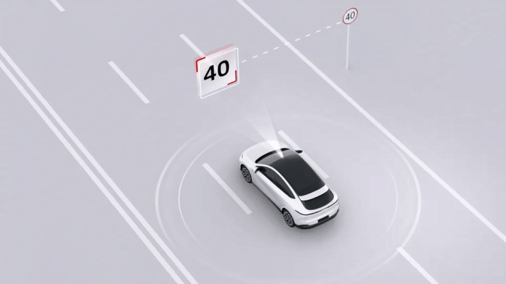
Seguridad activa
Consejos
Operación
Las señales que el TSR puede identificar incluyen: identificación de límite de velocidad, identificación de límite de velocidad variable, des-identificación de límite de velocidad, identificación de límite de velocidad por zona, señal de límite de velocidad multicarril, señal de múltiples límites de velocidad, señal de límite de velocidad de rampa de salida de alta velocidad.
Alarma de exceso de velocidad
Cuando el TSR identifica un límite de velocidad de la carretera:
• Durante la conducción manual o la conducción asistida por ACC/LCC, si se excede el límite de velocidad de la carretera, el ícono de límite de velocidad en el tablero parpadeará y activará una alerta sonora.
1. Seleccione Asistente Inteligente de Límite de Velocidad→Pantalla. Solo el ícono parpadea como alarma.
advertencia
- Seleccione Asistente Inteligente de Límite de Velocidad→Alarma→Pitidos. El sonido de la alarma se emitirá cada vez que cambie el límite de velocidad.
El TSR es solo una ayuda a la conducción y no puede manejar todas las condiciones de tránsito, clima y demás, y usted, como conductor de su vehículo, es responsable de conducir de forma segura. No confíe en esta función para controlar el vehículo, ya que podría producirse lesiones o la muerte.
- Seleccione Asistente Inteligente de Límite de Velocidad→Alarma→Sonido de Alarma. El sonido de la alarma se emitirá cada vez que se exceda el límite de velocidad.

Seguridad activa
Advertencias, precauciones y limitaciones
Sistema de Asistencia de Velocidad (SAS)
En los siguientes escenarios, el TSR puede no funcionar:
advertencia
Introducción
• Radar o cámara restringidos.
• Cuando las señales de carretera o de límite de velocidad han cambiado recientemente.
• Cuando las señales de tránsito están en mal estado.
Las advertencias, precauciones y limitaciones anteriores no cubren todas las condiciones que pueden afectar el funcionamiento normal del TSR.
El SAS puede establecer la velocidad máxima de crucero de forma sincronizada con el límite de velocidad de la carretera identificado por el TSR.
El SAS es solo una ayuda a la conducción y no puede manejar todas las condiciones de tránsito, clima y carretera, y usted, como conductor de su vehículo, es responsable de la seguridad en la conducción. No confíe en esta función
advertencia
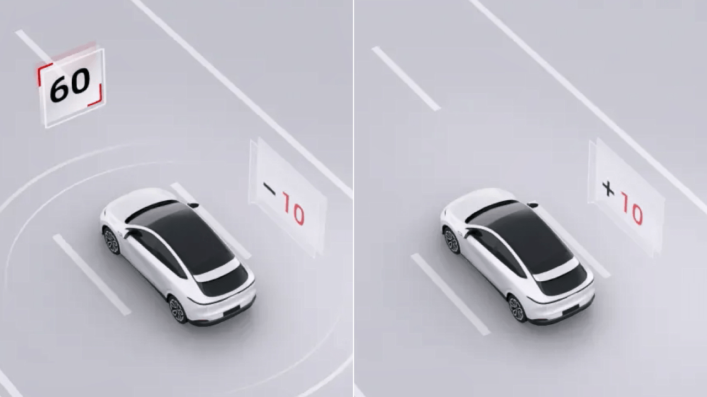
Seguridad activa
para controlar el vehículo, ya que podría producirse lesiones o la muerte.
solo puede ejecutarse después de que el conductor confirme cada cambio del límite de velocidad.
Operación
• Cuando selecciona Ajustar para Asistente de Límite de Velocidad y desactiva Confirmar Antes de Ajustar la Velocidad, y si el ACC/LCC está activado, el límite de velocidad puede ejecutarse automáticamente sin la confirmación del conductor en cada cambio de límite de velocidad.
Opening and closing
Advertencias, precauciones y limitaciones
El SAS puede no funcionar plenamente o proporcionar información imprecisa en las siguientes condiciones:
warning
• Cámara obstruida.
• Cambios recientes en las carreteras o en los límites de velocidad, como obras, normativas, etc.
En la CID, ingresá a la interfaz “ →Asistencia al Conductor→Seguridad Activa”, donde podés configurar el modo de asistencia del SAS.
• Señales de tránsito deficientes: rotas, descoloridas, borrosas o no colocadas según lo requerido.
• Cuando seleccionás Ajustar según Asistencia de Límite de Velocidad y activás Confirmar Antes de Ajustar la Velocidad, y si el ACC/LCC está activado, el límite de velocidad
Las advertencias, precauciones y limitaciones anteriores no abarcan todas las condiciones que pueden afectar el funcionamiento normal del SAS.

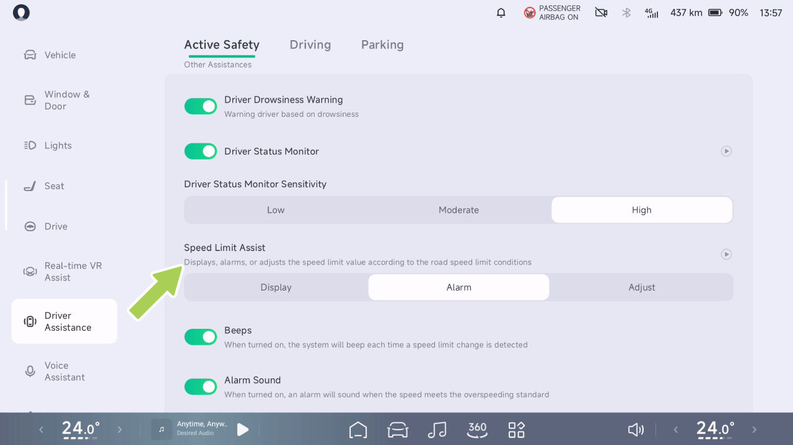
Seguridad activa
Sistema de Monitoreo del Conductor (DMS)*
aumentará la sensibilidad del LDW y el FCW para brindar al conductor más tiempo de reacción.
Introducción
Funcionamiento
Interruptor
Cuando el vehículo está en marcha, el DSM monitorea el estado del conductor. Una vez que el conductor muestra distracción o fatiga, el sistema emite una advertencia.
En la CID, ingresá a la interfaz “ →Asistencia al Conductor→Seguridad Activa”, donde podés activar o desactivar el DSM. El DSM ofrece sensibilidad alta, media y baja, con un valor predeterminado medio al momento de la entrega. Los usuarios pueden ajustarla según sus preferencias de conducción. El sistema recordará la selección de sensibilidad del usuario.
Cuando el conductor experimenta fatiga o distracción, el sistema proporciona recordatorios mediante texto y sonido en el tablero de instrumentos. Mientras el conductor está fatigado o distraído, el sistema

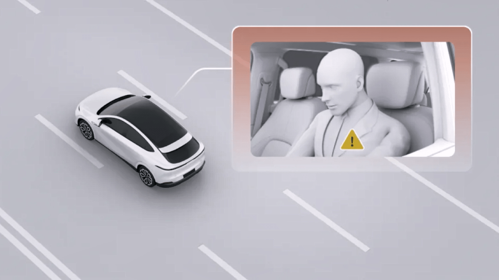
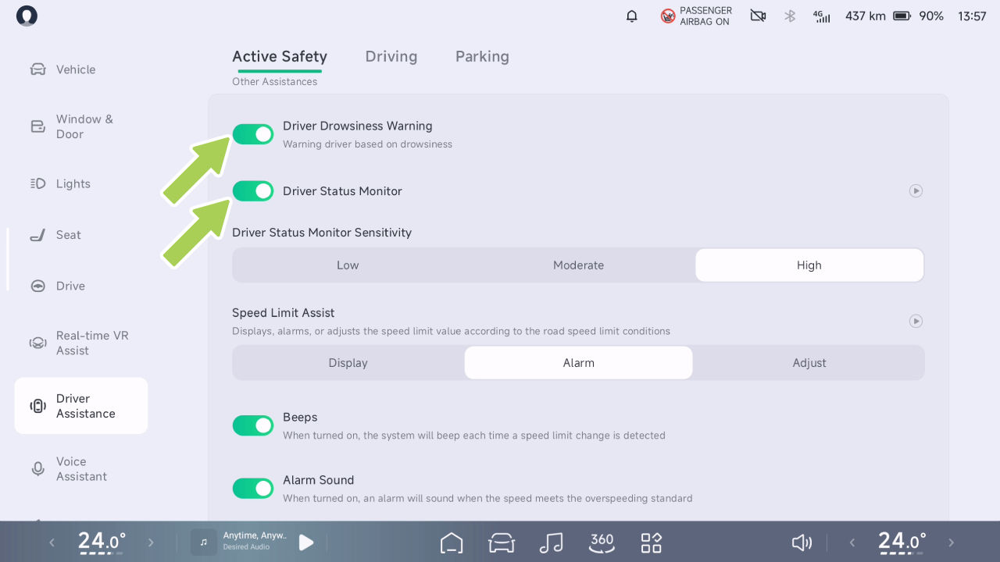
Seguridad activa
Consejos
• El DSM/DDW es una función auxiliar y no debe depender de los recordatorios de fatiga y distracción para hacer frente a todas las situaciones; el conductor siempre debe mantener el control del vehículo y la visión del entorno vial.
El interruptor del DDW solo puede desactivarse durante cada viaje, después de que se haya activado la alarma.
Advertencia de Somnolencia del Conductor (DDW)
• Mantené la vista en la carretera y nunca conduzcas cansado. Cuando el sistema indique "Mantené la vista en la carretera", pedile al conductor que ajuste su comportamiento de conducción de inmediato o que busque cuanto antes un lugar seguro o una estación de servicio para detenerse y descansar.
El DDW se utiliza para monitorear la somnolencia del conductor. Cuando el conductor se encuentra en estado de somnolencia, el sistema emite una alarma para recordarle que se concentre o tome otras medidas para aliviar la somnolencia y evitar conducir somnoliento.
Cuando el DSM/DDW está en funcionamiento, la cámara interior no almacena ni transmite datos de privacidad personal como audio y video.
caution
El DSM/DDW no funciona en todas las situaciones, y varios factores pueden provocar que la función falle, como:
warning
warning
• Voltaje de alimentación alto o bajo;
• Cuando el DSM/DDW está desactivado, no se podrá monitorear al conductor para detectar fatiga o distracción ni advertirle que la seguridad de conducción está comprometida; desactívelo con precaución.
• Desconexión de la línea de hardware;
• Cámara interior bloqueada o defectuosa.
Las advertencias, precauciones y limitaciones anteriores no cubren todas las condiciones que podrían interferir con el sistema de advertencia de fatiga del conductor, y
Seguridad activa
diversos factores pueden impedir que funcione como se espera. Manténgase alerta y vigile siempre las condiciones del camino.